MIMIC Case Study
1. Introduction
Whether launching a new website or maintaining an existing application, understanding how users interact with it is paramount. The user experience significantly influences business outcomes, and issues such as bugs, and poor performance can contribute to a negative user experience.
While engineers regularly need to fix the bugs that exist in their applications, understanding the source of these issues is not always straightforward. Engineers often have the question, “what exactly did my users do” to cause this bug?
MIMIC doesn’t just tell organizations how users interact with their applications, it shows them.
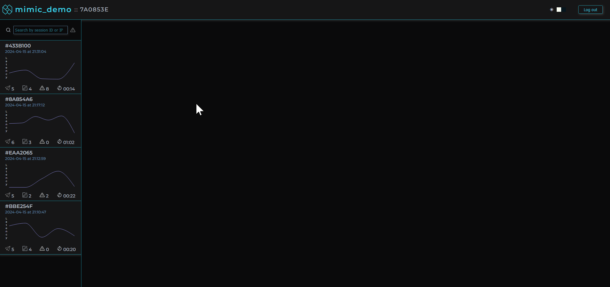
MIMIC is an open-source session replay framework for recording and replaying user sessions that illuminates the sequence of events that led to a given bug or network error.
Before we get into more detail about what MIMIC is and how it accomplishes this, let’s first discuss the problem domain and different techniques aimed at addressing these issues.
2. Observability
“[Observability is the] measure of how well you can understand and explain any state your application can get into, no matter how novel, or bizarre.” - Majors et al., Observability Engineering [1]
Generally, software is about taking an input, performing some computation, and producing an output. When we get an output that we don’t expect, we can take different steps to understand the problem.
For example, when we’re debugging a simple program locally, we may not realize something is wrong unless it’s taking a long time for something to load, or if we happen to notice a CPU usage spike. If we look at the activity monitor on our computer we can see exact measurements. These are examples of metrics which can help tell us what problems exist.
Now that we know a problem exists, our next step might involve outputting information to our console to determine when in our code a problem occurs. These are known as logs and they include error messages. They help us pinpoint the root cause of problems.
If there was an error while our program was executing, our console might also produce a trace for us. These are records of the path of our code’s execution as it moves through different functions and methods. They give us the context of our problem and where our problem happens within that context.
Metrics, logs, and traces are so useful for solving problems that together they are known as the Three Pillars of Observability. [2]
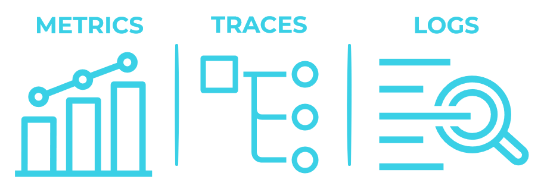
We became interested in the challenges that frontend developers face in observing their applications, let's discuss how observability tools can help debug frontend applications.
3. Frontend Observability
There are several categories of observability tools that can aid with debugging frontend applications including Performance Monitoring tools, Error Tracking tools, and Real User Monitoring & Analytics tools. [3]
3.1. Performance monitoring tools
Performance Monitoring tools (e.g. New Relic APM) collect and display metrics such as response time, page load time and server latency. This data is usually aggregated and analyzed to identify trends, set benchmarks, and track performance improvements. Some tools offer the ability to drill into the data at the individual session level to find outliers that require attention.
3.2. Error tracking tools
Error tracking tools (e.g. Sentry) can capture errors like failed network requests, alert developers when they occur, and provide context such as the URLs and request headers. Error tracking tools can also aggregate errors by type and frequency. Analyzing this data can help organizations focus on the most important issues affecting their users.
3.3. Real User Monitoring (RUM) Tools & Analytics
These tools (e.g. Datadog Real User Monitoring, Google Analytics) automate the process of capturing additional context by tracking user interactions including page loads and link clicks. This information can then be viewed by developers in the form of a list of interactions that took place during a user session.
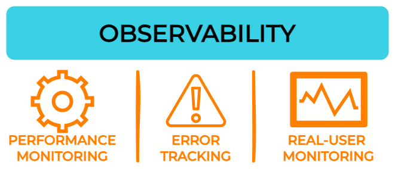
While the above categories of observability tools provide a great deal of insight into the behavior, performance, and health of web applications — especially when used together — some challenges nevertheless remain for those seeking to address problems specific to frontend applications. [4]
3.4. Lack of user-centric perspective
While these tools often possess individual user session data, they tend to provide it in aggregated form. This can prove challenging, for both technical and non-technical stakeholders, to access and understand how the information across these different tools relates to each other and to the experience of a specific user.
3.5. Lack of visual context
Even if all of the information regarding a specific user session is gathered across the different observability tools, it can still be hard to make sense of what that data means without actually seeing it in the context of the web application itself.
3.6. Lack of granular user interaction details
Real User Monitoring and Analytics tools can provide information about user interactions such as page loads and clicks, but they usually lack the granular details that can signal user intent, navigation patterns, and areas of friction within the application.
Fortunately, there is a category of observability tools that help address these challenges referred to as session replay.
4. Session Replay
Session replay is an observability tool that allows organizations to record individual user sessions within web applications and replay those sessions as if they were videos. Although the replay appears to be a video, it is in fact a reconstruction of the DOM (Document Object Model).
Session replay tools accomplish this by capturing snapshots of the DOM, along with the user’s interactions such as mouse movements, clicks, keyboard inputs, network requests and responses.
- User-centric perspective. Session replay tools present collected data in the context of individual user sessions making it easier for stakeholders of all types to understand.
- Visual context. Session replay tools record and replay the actual user interface and interactions with that interface. This helps developers and others to understand user behavior and identify usability issues.
- Granular user interaction details. Session replay tools capture smaller details, often overlooked by other tools, such as mouse movements, scrolls, and other actions that can signal user intent, navigation patterns, and areas of friction within the application. Other tools could capture this data, but without visual context this information becomes less meaningful to organizations.
4.1. Use Cases
A primary application for session replay is debugging, where session replay offers a granular, visual representation of the exact sequence of actions of a user's journey, assisting engineers in identifying and resolving issues efficiently. Additional use cases include [5]:
- Behavior funnels. Offer valuable insights into user navigation patterns, helping businesses optimize user flows and enhance conversions.
- Customer support. Enables customer support teams to better understand user issues and provide more effective assistance.
- Client-side metrics tracking. This focuses on monitoring technical aspects such as performance, loading times, and user interactions on the client side of an application.
- Compliance/legal requirements. Session replay can be used for auditing user interactions as part of industry regulations, tracking activities as part of internal policies, and necessary documentation of incidents or security breaches.
4.2. Tradeoffs
4.2.1. Performance Overhead & Impact on User Experience
Session replay tools introduce performance overhead to web applications as they record and transmit DOM snapshots and user interaction data. This can increase CPU, memory, and network bandwidth usage. [6]
Organizations should consider whether these impacts on performance could be significant enough to frustrate users or detract from the overall usability of the application.
4.2.2. Privacy Concerns
One of the main trade-offs of session replay tools is privacy. Capturing and replaying user interactions may involve collecting sensitive information, such as personally identifiable information, passwords, or financial data. [7]
If a website handles sensitive user data, organizations should consider implementing measures to ensure the privacy and security of user data when implementing session replay, such as masking or omitting the capture of sensitive data.
4.2.3. Engineering & Financial Costs
Integrating and maintaining session replay functionality within a web application can require development effort and ongoing maintenance. [7]
Storing session data for replay purposes can also incur storage costs, especially if data is stored long-term.
For this reason, as well as those listed above, it’s important for organizations to carefully weigh the benefits of session replay against its tradeoffs.
It’s important to consider that in some cases, session replay may not provide enough value or actionable insights to outweigh its performance impacts, privacy implications, and financial cost.
Examples of such applications include:
- Those needing to prioritize performance above all else.
- Those whose existing observability tools adequately meet their requirements for understanding user behavior and application performance. This might be especially the case of applications that have minimal user interaction or that have well-understood user behavior patterns.
5. Existing Session Replay Tools
Organizations seeking to add session replay to their application have three main options: a hosted software-as-a-service solution, a do-it-yourself (DIY) approach, or a solution that is a hybrid of these two.
5.1. Software-as-a-service (SaaS) solutions
For larger organizations that can shoulder the cost of a fully featured and supported tool, SaaS solutions (e.g. FullStory, Hotjar, Microsoft Clarity) can be a good option. [8]
Benefits
- Ease of setup. Vendor provides deployed infrastructure.
- Scalability & Maintenance. Vendor handles scaling and maintenance.
- Ready-made user interfaces. Feature-rich user interfaces that visualize the data captured by logs to make it easier for engineers to understand the nature of problems
Tradeoffs
- Data Governance. Sensitive data may be stored with a third-party.
- Complexity. Large feature sets can be overwhelming and difficult to learn.
- High cost. SaaS vendors typically charge higher fees than the options discussed below.
5.2. Do-it-yourself (DIY)
For organizations that cannot accept the aforementioned tradeoffs, a DIY approach can be appropriate. Organizations can build their own session replay tool using open-source libraries such as rrweb which provides recording and replaying functionality. [8]
Benefits
- Customizability. DIY allows organizations to customize their tool to the specific needs of their application. e.g. if the transmission of certain types of data is compromising the performance of the application, modifications can be made to reduce the amount of that data being transmitted.
- Data governance. Software engineers get to decide exactly how and where their users’ data is transmitted, stored, and accessed.
- Low cost. A DIY solution does not require paying monthly fees to a session replay vendor.
Tradeoffs
- Time. Engineering hours are required to research, develop, and maintain the infrastructure for this DIY frontend observability tool. This can take engineers away from core tasks and in some situations could be more expensive than the fees charged by SaaS solutions.
- Features. DIY tools are also less likely to be fully-featured, especially when first developed.
5.3. Hybrid Solutions
Some organizations might prefer a DIY approach, but do not have the time or engineering resources to allocate to it. For these users, some SaaS providers (e.g. Highlight, PostHog) offer an open-source, self-hosted option which we’ll refer to as a hybrid approach. These solutions aim to combine the ease of setup of traditional SaaS tools with the customizability and data governance of DIY solutions. [9]
Benefits
- Customizability. While hybrid solutions provide default settings, their open-source nature allows developers to customize the tool to the specific needs of their organization.
- Data governance. Organizations get to decide exactly how their user's data is transmitted, stored, and accessed
Tradeoffs
- Limited usage. The architecture provided for self-hosted options typically cannot scale to the same extent as SaaS providers’ hosted offerings. This imposes limitations in terms of number of projects and monthly sessions. [10] [11]
- Limited features. Providers of these hybrid offerings often present a choice between feature-restricted free options and fully-featured paid options.
|
SaaS |
DIY |
Hybrid |
| Ease of Setup |
 |
|
|
| Scalability & Maintenance |
|
|
|
| Time |
|
|
|
| Customizability |
|
|
|
| Data Governance |
|
|
|
| Cost |
|
|
|
6. Introducing MIMIC
MIMIC falls into the hybrid solution category, combining the easy setup of a software-as-a-service product with the data ownership and control of a DIY approach.
MIMIC is an open source, self-hosted session replay framework that abstracts away the challenges of recording and replaying web application user sessions. It is tailored towards user experience improvement and debugging, and providing granular insights into application problems in a simple and intuitive manner. It uses a recording and replaying library, rrweb, and custom network interceptors to gather event data from the web application users interact with. This data is sent to the MIMIC backend for processing and storage and is then rendered to the MIMIC frontend dashboard.
MIMIC is an ideal solution for smaller companies looking for a low cost, easy to implement session replay solution which provides complete data governance and customizability to aid in debugging their frontend applications.
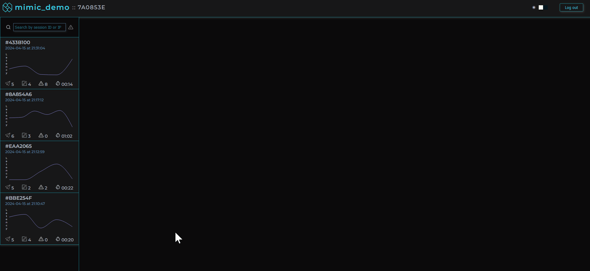
6.1. Benefits
Data governance
Our framework supports self-hosting only. This affords the user complete control of how their users’ data is captured, stored, processed and disposed of.
Customizability
Similar to other hybrid tools, MIMIC enables customization by the user as to what data is captured by the recorder, how much data is captured, where it is stored and how long it is stored for. Additionally, we designed a simple-to-use CSS variable system so the user is able to easily alter the appearance of the frontend dashboard if they so desire.
Time
MIMIC does more of the work so that developers can get to what matters quicker — improving their applications and user experiences. Our framework includes an installer to instrument an application with the script logic to capture sessions, an orchestrated backend to process this data, and an intuitive user interface to display it.
Data security and privacy
MIMIC is biased towards increased data security and privacy. By default, MIMIC masks all user generated text input for enhanced security/privacy however we add explicit instructions as to how this can simply be changed if the user feels that information would be beneficial.
Ease of setup
Instrumenting your application
Existing solutions require the user to install the NPM package, manually insert require/import statements and initialization logic within each aspect of their frontend application.
For ease of use, MIMIC’s custom python installer generates the recorder script based on your input during the installation and programmatically inserts the script tags into all HTML files for you.
Setting up the backend
In the README.md, MIMIC details the required infrastructure setup including a PostgreSQL database, Redis database and S3 bucket as well as a .env template to simplify setup. Once the infrastructure is in place, completing setup of the backend and frontend requires only one command in the terminal.
6.2. Tradeoffs
MIMIC does not provide the following features available in other existing solutions:
- No client-side application performance metrics beyond network request latency
- No hosted options available to users
- As MIMIC is tailored for debugging it does not serve the following use cases:
- Behavior funnel analysis
- Live session viewing
- Co-browsing for customer service representatives
6.3. Setup
MIMIC's setup involves two main steps:
- Deploy MIMIC's telemetry pipeline to a host of your choice.
- Run MIMIC's command line tool to instrument your application.
See our README on GitHub for more detailed instructions including how to deploy MIMIC to AWS.
6.4. Usage
MIMIC's dashboard provides a list of user sessions that can be searched and filtered by IP address, session ID, network request status codes, and errors.
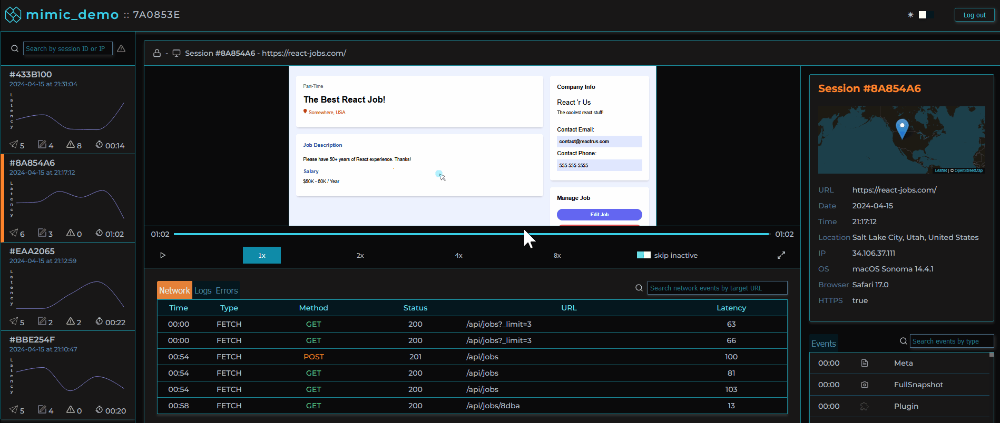
Clicking on a user session loads that user session in the player allowing the software engineer to view the user's experience of the web application as if they were sitting next to them.
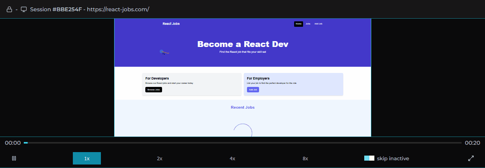
Session logs, traces, and metadata are viewable alongside the player providing important context.
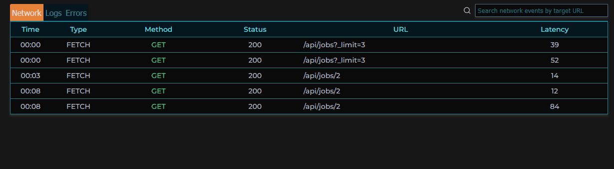
When clicking on a specific error in a session, an error modal pops up, providing the stack trace of that error when it occurred, as well as the events leading up to the error, and the session’s metadata.
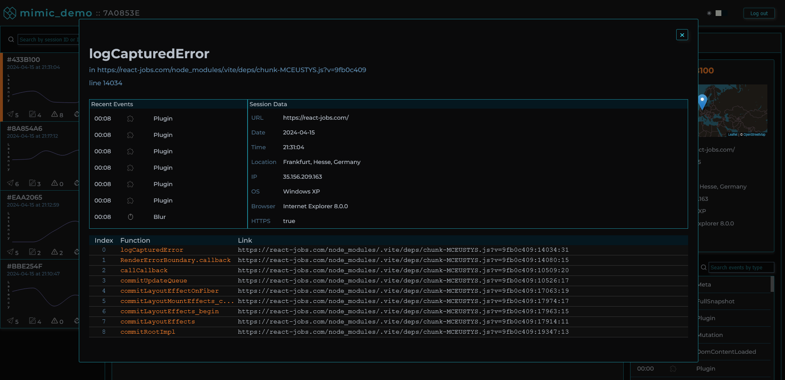
All user text input is masked by default to ensure data security and user privacy.
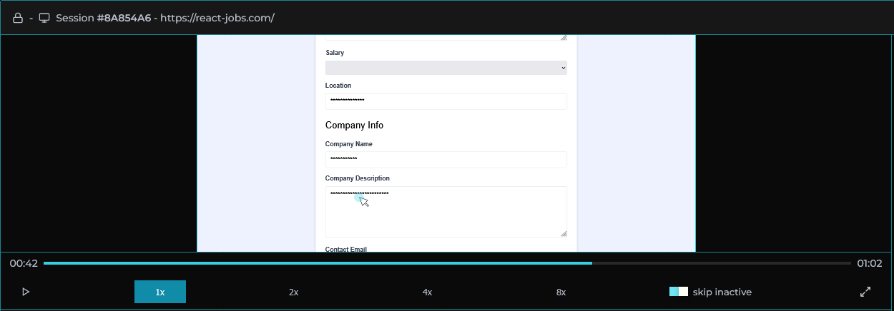
Session replays can be shared with anyone with login credentials by copy-and-pasting the url which can even direct a coworker to the exact moment a specific event occurred.
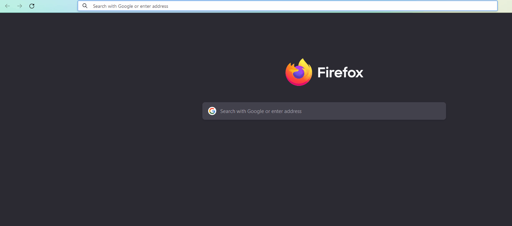
7. MIMIC Architecture
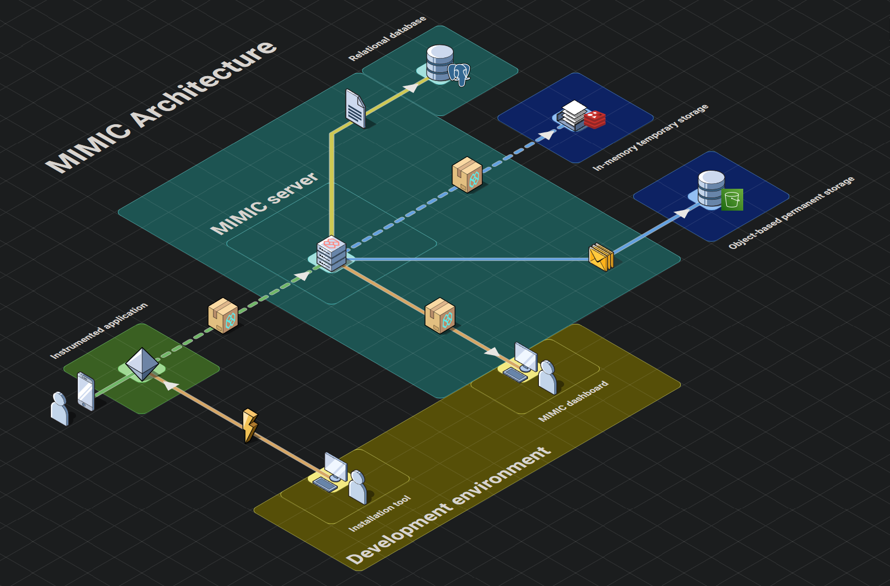
Telemetry systems like MIMIC have four main stages to their architecture: instrumentation, emitting, shipping, and presentation.
- Instrumentation Stage. Code is added to an application to collect, record, and transmit telemetry data.
- Emitting Stage. Telemetry data is gathered from the instrumented application and prepared for use inside the telemetry pipeline.
- Shipping Stage. Telemetry data is shipped, processed, transformed, and stored for use in the presentation stage.
- Presentation Stage. Telemetry data stored during the shipping stage is provided to users with visualization and analysis to help solve problems.
7.1. Instrumentation Stage
In order to fulfill our goal of an easy to use session replay tool, we required a simple solution to instrument an application with MIMIC’s functionality. To do this we use a Python installer which, when run, creates a JavaScript file that is then injected into all of the application’s HTML files in the working directory, and all subdirectories, via script tags.
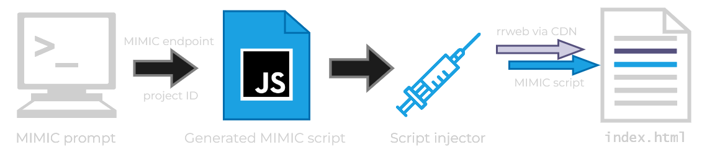
This solution comes with two main benefits. First, we can deploy our files as a Python package on PyPI (The Python Package Index), meaning that once the package is installed, we can run the installer in any desired program with a single command in the terminal. Second, the flexibility of a custom installer allows MIMIC to be largely agnostic to the type of application it is used with, whether it's a single page web application or a static website. So long as the application utilizes vanilla HTML file(s), the installer can inject the MIMIC script.
Once run in the root file of a target application, our mimic-replay installation Python package accomplishes four main tasks:
- Prompts the user for the URL location of their running backend MIMIC application, a unique project name, and password, validating the provided information at each step before the installer continues.
- Generates our MIMIC JavaScript file,
scripts.mimic.js from a template, interpolating it with a randomly generated project ID and the provided MIMIC backend URL.
- Recursively locates all HTML files nested within the project's root folder, injecting two script elements, one with the
rr-web CDN, and one with our local script.mimic.js file's relative location. These script elements have a defer attribute, to ensure that our script loading will not occur until after the client application has been loaded and rendered. This reduces impact on instrumented application load times.
- Makes a POST request to the MIMIC backend, containing the generated project ID, provided project name, and the encrypted version of the provided project password. If successful, MIMIC is ready to record user sessions in the target application.
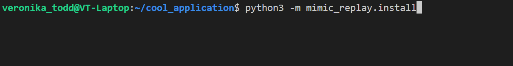
Now that MIMIC is properly instrumented in the desired application, it is ready to capture the activity that occurs when the application is in use.
7.2. Emitting Stage
The emitting stage utilizes two components to record all event data including DOM events, console logs and network requests: the rrweb library and custom network interceptors.
DOM events and console logs
MIMIC uses a tool called rrweb to record the DOM and subsequent mutations in addition to a plugin for the recorder to capture console logs. The rrweb recording functionality involves creating snapshots of the DOM and tracking changes.
The full snapshot of the DOM, while similar to calling outerHTML on the document, is a serialized version which additionally includes information like stylesheets, images, etc.
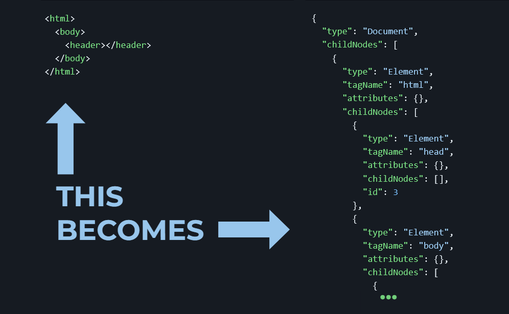
After completing a full snapshot, rrweb tracks changes to the document by capturing incremental snapshots. These incremental snapshots capture changes to the DOM such as node creation or deletion, attribute changes, text changes, mouse movement and interaction, scrolling, window resizing, and input. This functionality relies heavily on the MutationObserver API tracking changes to the DOM in real time, but also requires custom event listeners added by rrweb to track certain human input that doesn’t trigger the MutationObserver.
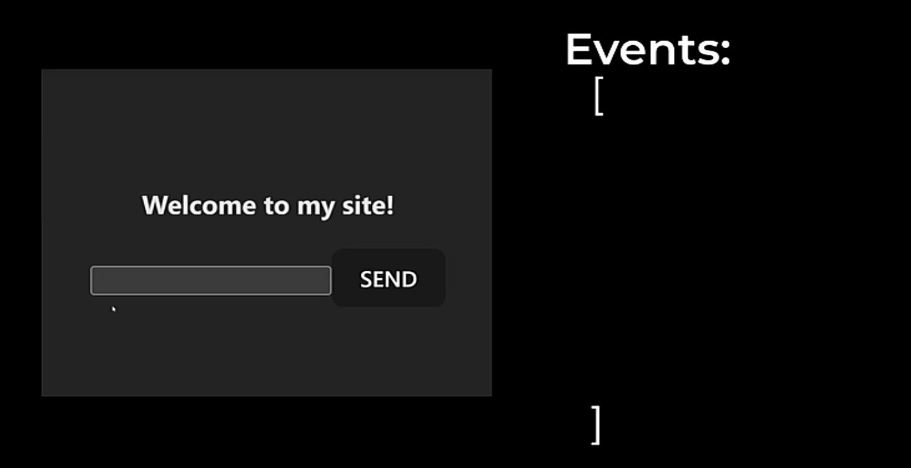
Network events
For the capturing of network events, MIMIC uses custom interceptors to patch functions and constructors globally available in the browser.
We patch the fetch method on the global window object and the open method on the window.XMLHTTPRequest object. This enables us to extract information from the request prior to being sent, as well as data once a response is received. With this information, we can build custom event objects similar to that which rrweb creates for each recorded event. The captured information includes timestamps, paths, and request methods. This script logic, however, can be modified if additional information is desired such as request headers or body.
We patch the Websocket constructor on the global window object so that we can add custom event listeners to each Websocket instance created. Similar to the previously mentioned methods we patched, we create custom event objects that include information like the path and message for events such as open, message, close.
All recorded events, whether they were created by rrweb or our custom interceptors, are temporarily stored in the browser’s memory until they are sent to the backend infrastructure.
7.3. Shipping Stage
The serialized event data is sent from the instrumented application to the backend server at a specified interval, five seconds by default.
The first batch of event data for a given session triggers a three step process:
- First, a unique session identifier is created and attached as a cookie to the response object alongside a last activity timestamp representing the most recent activity for this session.
- Next, a new record is created in the relational database for this session including the session’s ID and additional metadata such as the user’s browser, operating system, approximate location and timezone.
- Finally, two keys are created in the in-memory data store for this session. The first references the serialized event data, while the second serves as a timer (time to live) for the session’s expiration, 10 seconds by default. We need two keys because if we only used one key with a time-to-live for each session, when that key expires signifying the session has ended, the data would be lost before we could request it.
At this point, a response is sent back to the instrumented application.
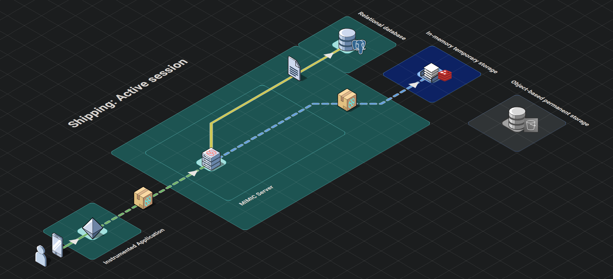
Each subsequent batch for a given session triggers a two step process:
- First, the server checks that the cookie attached to the request object is still valid, refreshes the last activity timestamp of the cookie and attaches it to the response object.
- Next, the serialized event data is appended to the existing event data referenced by the first key in the in-memory temporary data store. The second key, acting as an expiration timer for the first, has its time-to-live refreshed.
The final stop for this raw event data in the shipping stage begins when a user session is completed. By default, sessions are deemed complete when a new batch of events have not been received by the in-memory temporary data store for 10 seconds (reminder: new batches are sent every 5 seconds from the instrumented application). This triggers a four step process:
- First, the second key representing the status of the session expires and the in-memory temporary data store publishes an expiration notice indicating a session has completed.
- Second, the backend infrastructure which is subscribed to such notices, extracts the serialized event data from the first key and subsequently deletes the key.
- Next, the backend compresses this serialized event data and sends the compressed object to the permanent object-based store.
- Finally, the backend updates the session’s end time in the relational database.
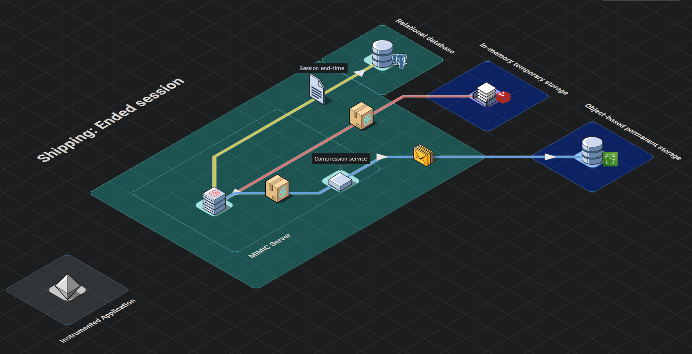
7.4. Presentation Stage
We recognized the dashboard as the primary point of interaction with MIMIC for developers, and we wanted to give the frontend's design and functionality special care.
Successfully logging in to the frontend dashboard triggers a four step process where the backend retrieves, transforms and sends the requested data:
- A request for the sessions of an instrumented application is sent to the backend infrastructure.
- A query is made to the relational database for all completed session records associated with the instrumented application.
- For each session record returned by the relational query, the compressed event data is requested from the permanent object-based data store. This is conducted by mapping the record’s session IDs to promises and invoking
Promise.all with the iterable of promises. This allows us to request all of the sessions’ data in parallel without waiting for each response to begin the next request, while maintaining the chronological order of the sessions.
- For each session, the backend decompresses the event data, filters the data into more defined groupings (e.g network events, errors, console logs, DOM events), attaches the session metadata retrieved by the original relational query and returns this transformed object in its response to the frontend.
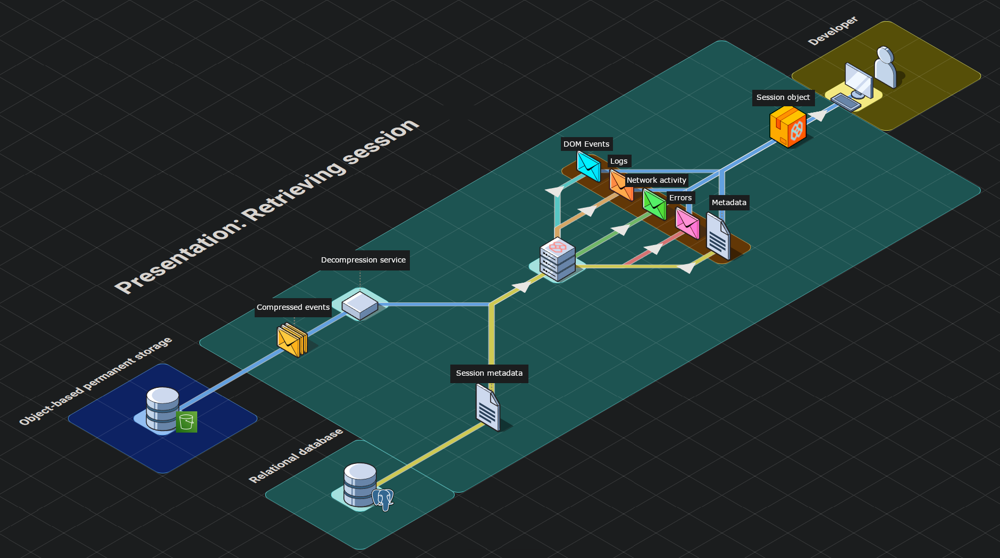
The centerpoint of our dashboard is the rrweb provided replayer. Although it appears to play a video recording, rrweb’s replayer is actually an iframe HTML element. This illusion is accomplished via a three step process where the serialized event data is parsed, the iframe element is populated with the DOM dynamically, and subsequent changes are animated as they occur per timestamps assigned by the recorder.
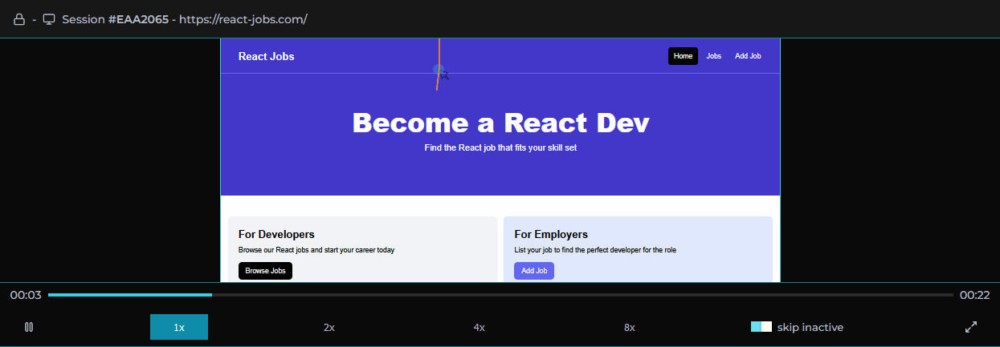
Surrounding the player is our custom dashboard including a series of components aggregating different types of events that occurred for the selected session. We based our choice of data to present on our own experiences and those of other working engineers. These include network requests made during the session, console logs recorded, errors with reference to their stacktrace, and user metadata.
For all of these types of events, we designed a click-to-navigate feature that allows the user with a click of their mouse to navigate to exactly where an event occurred in the replayer for visual inspection.
Given our objective of simplifying the debugging process, filtering and searching sessions was a main priority. There wouldn’t be as much value to be gained from inspecting sessions where everything went according to plan. Sessions can be searched by session ID/IP address and within each session the user is able to search for specific network requests, logs or errors. Sessions can also be filtered using “Error Mode” by clicking on the toggle in our session selection list. The list will then only include sessions in which errors occurred or network requests had status codes in the 400+ range so the developer can immediately identify where and when something went wrong.
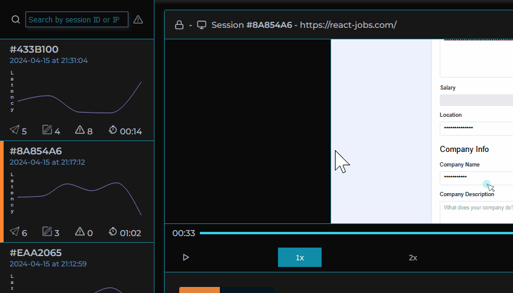
Additionally, we provide a panel where user metadata is displayed as variants of browsers, operating systems, and location can often contribute to bugs and non-performant requests.
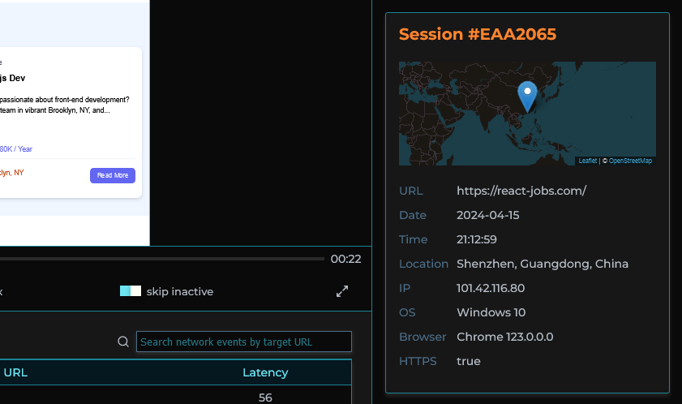
Combining all four phases comprises our session replay framework. We had to solve a variety of technical challenges and accept certain tradeoffs, some of which we discuss in greater detail below.
8. Technical Challenges & Tradeoffs
8.1. Identifying Sessions
The Problem
In order to group user interactions into sessions, we needed to decide how to identify, and how to start and end each session.
Our Choice: server-side session management
Identifying a session
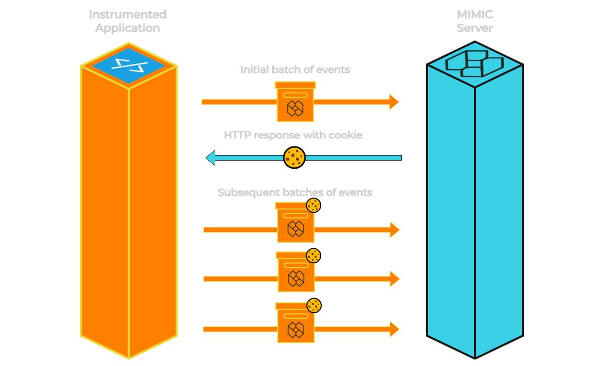
A session begins when a user visits any page in the client application. Our script loads and sends batches of events at a specified interval — 5 seconds by default.
When the backend server receives the first set of events it checks the request's headers for a valid session cookie. Since this is the first batch of events there will not be a valid cookie. The backend creates a new session id, attaches it to a cookie, and returns this cookie to the client browser as part of its response.
Each subsequent batch of events sent to the backend includes this cookie to identify it as belonging to the same session.
Ending a session
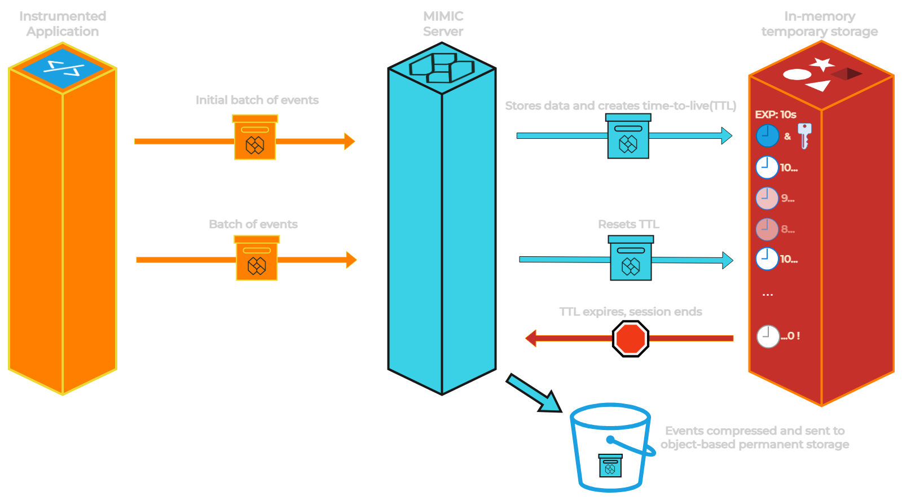
Active session event data is stored in an in-memory temporary data store (Redis) that includes a time-to-live (TTL).
Every time a new batch of events is added to the temporary data store, the TTL for the given session is reset. If a new batch of events with that session id does not arrive prior to the end of the associated TTL, the session is deemed to have ended.
At this point the session event data is removed from the in-memory temporary data store and moved to the object-based permanent data store. If a batch of events arrives after the expiry of the TTL (only in situations where the browser is not active/open for prolonged period), a new session is created and a new session id is returned in the response to the client browser
Additionally, the script has logic that will cease the sending of batched events to the server if the user is deemed inactive. This is assessed via the visibilityChange event on the global document object. When the visibility state changes to hidden we send one final batch of events before stopping the recorder and the interval tracking when the next batch of events should be sent. This occurs when the browser is minimized or the user switches to a different tab in the browser. This prevents excessive requests to the server containing no value, and bloating of event data in the in-memory storage and subsequently object storage. If later the user returns to the page and the visibility state changes to visible we reinitialize the recorder and save interval to again record the user’s session.
The Benefits
Server-side session management allows the server to control the entire session lifecycle.
This is important because:
- The server, uniquely, can directly communicate with every aspect of our architecture.
- When a session begins, this needs to be communicated to the relational database and the temporary data store. When it ends, the session data must be transferred from the temporary data store to the permanent one. If the logic resided, for example, in the frontend client there is risk that the message to end the session would never reach the backend due to network issues in addition to further impacting performance of the instrumented web application.
The Tradeoffs
It is possible that due to network error or congestion, batches of events may arrive after the session has expired on the backend.
Although the data would not be lost, this would result in a single session being broken up across two or more sessions. We mitigate this by allowing 5 seconds for batches of events to be handled by the server and sent to the temporary data store (refreshing the TTL) prior to the session being deemed complete.
The Alternatives
Partial client-side session management
It is possible for the session management to be handled on the client-side within the MIMIC script. This would involve offloading the creation, continuance, and ending of sessions to the browser while the backend would still be responsible for handling incoming batches of events. There are, however, two concerns with this option:
- This would require increased MIMIC script logic running in the instrumented application which would further impact performance. The MIMIC script running in the frontend would now be responsible for creating session identifiers, refreshing expiration of the session as appropriate and handling additional logic for when a session should be deemed complete. This goes against one of the primary objectives of MIMIC to have the lowest impact possible on instrumented application performance.
- It’s possible that due to a network error or browser crash that a browser’s request to end a session might never arrive at the backend server or be made at all. This would result in session event data that never gets transferred from the in-memory temporary data store to the object-based permanent data store for display in MIMIC’s dashboard. These unended sessions would build up in the in-memory temporary data store unnecessarily hoarding resources.
Total client-side session management
Taking the previous alternative one step further, it is possible for the client-side to handle all aspects of session management (i.e. session beginning, event storage during the session, and sending of all event data at the end of the session). However, this alternative compounds the aforementioned concerns.
Total client-side session management would result in an even greater performance impact on the instrumented application as an increasingly large event data object would need to be stored in browser memory or localStorage.
The problem with in browser memory is that it does not persist once the browser has been closed. If a network error were to take place or the browser crashed, an entire recorded session could be lost.
localStorage persists, addressing this problem, but it presents a new one as it has a limit of 5-10 MB per domain which would need to be shared with the client application itself.
8.2. Storage
The Problem
Each user session creates three different types of data with very different storage needs: active session data that requires frequent updates, completed session data that needs to be stored long-term, and session metadata that needs to be queried.
Our Choices
We chose to use a different data store for each of our different types of data.
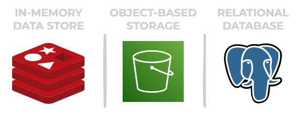
In-memory data store
We chose to use an in-memory data store as a buffer holding active session event data, and only update the permanent store of data once the session ends.
The in-memory temporary data store provides:
- Low-latency. In-memory data stores store data in RAM providing faster access times compared to disk. This is valuable as this will be the most frequently accessed data store we employ.
- Scalability. Using an in-memory data store for active session data allows this layer to be scaled independently from the relational database avoiding complexity as the number of concurrent user sessions grows.
Object-based storage
Once the session has ended, the event data will no longer change and no longer benefit as greatly from the low-latency in-memory data store. From this point, we use fflate, a compression library, to prepare the data for an object-based storage service that provides:
- Scalability. The distributed nature of object-based storage systems allow them to handle growing amounts of data without worrying about hardware limitations.
- Durability. Object-based storage systems typically use disk storage for persistent storage. Data is also typically replicated across multiple servers and data centers to ensure durability and availability.
Compressing and decompressing data on the server side allows us to reduce the amount of storage required for completed session data, but without the additional performance impact on the instrumented application or the frontend dashboard.
Relational database
We chose to use a relational database for storing and querying our session metadata. Each record includes a project id that connects sessions to project credentials, and a session id that connects the metadata to the event data in the object-based permanent data store.
We selected a relational (SQL) database rather than a document (NoSQL) database for our session metadata due to SQL’s relative strength in efficiently performing complex queries and the lack of a need for a dynamic schema since the structure of our data is rigid.
The Tradeoffs
There are three main tradeoffs to our approach:
- Potential data loss. While active sessions are stored in-memory, there is the potential for this data to be lost if the node that this data is being stored on goes down.
- Increased complexity. Because we are using multiple stores of data, the application now requires logic for moving the session data from the temporary in-memory data store to the permanent object-based storage and to ensure data is neither lost nor made redundant as this happens.
- Time to decompress data. Compressing the session event data kept in the object-based permanent data store means that some time is required to decompress it prior to viewing it in the replayer.
The Alternative
Only relational database and object-based storage
This alternative excludes the use of an in-memory temporary data store as a buffer storing the active session event data.
In this situation, the relational database would continue to store session metadata, whereas the object-based storage would now be responsible for holding both active and completed session event data.
The disadvantage to this approach is that edits cannot be made directly to data in object-based storage. For every subsequent batch of events for each session, we would need to download the event data from storage, decompress that data, append the new events, recompress the data, and upload it back to storage.
Alternatively, we could forgo compressing the event data that is stored in the object-based storage so the object can be pulled out, edited, and put back in more efficiently. Of course, this would increase the size of the data that needs to be stored contributing to increased costs.
9. Future Work
MIMIC provides developers greater visibility into their users’ experiences with their web application. While we are proud of what we’ve accomplished, we appreciate there is future work to be done to make MIMIC even more valuable for its users. Here are some directions we could take to improve our framework:
- Containerize the infrastructure using Docker for easier deployment.
- Provide support for more frameworks (e.g. Ruby on Rails, Django, .NET).
- Increase testing coverage.
- Convert to TypeScript for better maintainability.
- Paginate sessions displayed on the dashboard for better performance as the number of recorded sessions grows.
10. References
https://info.honeycomb.io/observability-engineering-oreilly-book-2022
https://www.oreilly.com/library/view/distributed-systems-observability/9781492033431/
https://logrocket.com/for/frontend-application-monitoring
https://newrelic.com/blog/how-to-relic/debugging-front-end-issues-with-session-replay
https://www.datadoghq.com/knowledge-center/session-replay/
https://www.fullstory.com/session-replay/
https://www.dynatrace.com/news/blog/what-is-session-replay/
https://www.fullview.io/blog/what-is-session-replay
https://posthog.com/blog/best-open-source-session-replay-tools
https://www.highlight.io/docs/general/company/open-source/hosting/self-host-hobby
https://posthog.com/questions/self-hosted-version